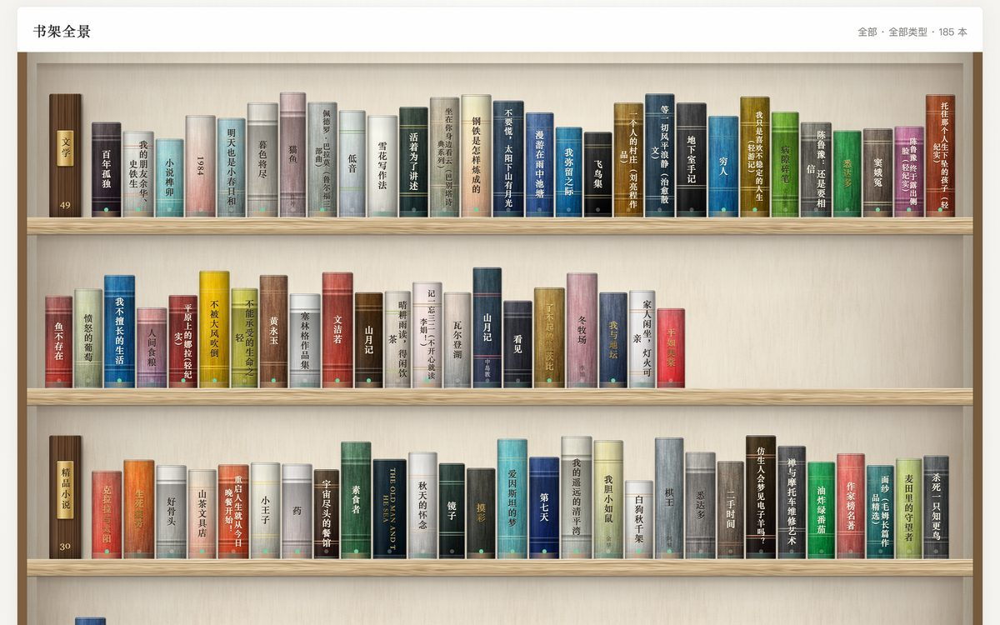

AI 工作流
用 AI 搭起每天在用的工作流程
我把一个人负责的市场工作逐项梳理，为每项任务写清楚标准、可用来源和不能做的事，整理成 AI 可以照着执行的 Skill。这套流程在日常工作中稳定使用，并从 Claude 完整迁移到了 Codex。
- 12 项重复任务 → 9 个 Skill → 1 套带路由的体系
- 每个 Skill 都有来源规则、质量关卡和“草稿 / 提交 / 发布”三级权限
- 方法已用英文开源到 GitHub
6 年市场与增长经验，现任 Innova Market Insights 中国区市场负责人。工作中，我用 AI 搭建了日常的内容与获客流程；工作之外，我自学 AI 编程，独立做出了一款付费产品。

我是林君如（Joni），在上海工作。本科读食品科学与工程，工作 6 年，做过新媒体、市场、人事、招聘和销售，现在是 Innova Market Insights 中国区市场负责人。
第一份工作在食品行业媒体与会展公司 FoodTalks。我 0 经验入职，从市场专员做起，之后担任总裁助理，同时兼任新媒体运营经理，后来又兼任人事经理。网站推广、SEO、社群、公众号、招聘、销售、团队管理，都是我在这份工作里边做边学的，每一项都做出了结果。两年里，我加薪 5 次、晋升 2 次。
2024 年我加入 Innova Market Insights，这是全球食品饮料行业知名的市场咨询公司。中国区的市场工作由我一个人负责，包括展会、内容、邮件和销售支持。为了一个人把这些事做好，我开始系统地使用 AI：把重复的工作整理成固定流程，由 AI 按流程完成，我来检查。2024 年，中国区销售线索增长了 118.6%。
工作之外，我自学用 AI 写代码，独立做出了“阅读档案馆”并上线收费；也试过 GEO、微信小程序和播客。有新的工具和方法出来，我会先自己动手做一遍，再看结果决定要不要继续投入。
我把一个人负责的市场工作逐项梳理，为每项任务写清楚标准、可用来源和不能做的事，整理成 AI 可以照着执行的 Skill。这套流程在日常工作中稳定使用，并从 Claude 完整迁移到了 Codex。
AI 会编造数字，也可能做出没被允许的操作。我为每类产出设计了核对方式：结论要能对上原文，引用要能在用户自己的笔记里找到，邮件名单发送前要检查有没有漏掉排除对象。
从行业媒体到市场咨询公司，我负责的都是能用数字衡量的结果：流量、粉丝、线索和转化。我会先给用户分层，再根据数据调整内容和渠道。
我把产品需求拆成小的迭代，用 AI 编程工具逐步实现，每一步自己验收。阅读档案馆从需求、设计、前后端到收费和数据追踪，都是我一个人完成的；你现在看到的这个网站也是。
我 0 经验进入职场，在第一份工作里先后做了市场、新媒体、人事、招聘和销售，每一项都是从头学起，两年里加薪 5 次、晋升 2 次。到 Innova 后，我又自学了 GEO 和 AI 编程，也都做出了结果。
我独立设计、开发、上线并收费的产品，把微信读书的阅读数据整理成一座个人阅读档案馆。
这套方法来自我的日常工作：把每项任务的做法写清楚，让 AI 每次按同样的标准完成，我也能据此检查结果。
同一件事给 AI 解释过两次，就该写进 Skill。
找不到出处的数字标为缺失，绝不填补。
起草、存草稿、提交、发布、改线上配置，是五种不同的授权。
文件要打开检查，名单要查泄漏，平台状态要回读。
发现一个错误，就去查同类的所有错误。
这是我主动发起的项目：发现 AI 搜索很难找到我们的品牌后，我从内容和官网两方面做了调整。
用 AI 辅助的 Python 流程，把中国现制饮品数据库译成英文，按受控术语表统一用词，保证同一个词全库一个译法。
3,000+ 联系人按业务类型和主题分层；客户、退订、黑名单按规则排除，每次发送前都核查到零泄漏。
借助 AI 做的轻量页面：报告节选加内容门控和线索表单，把内容营销、获客和销售跟进连成一条线。
“个人食物库 + 转盘选择”小程序，从需求定义、交互流程到页面实现和提交说明，用 Cursor / Codex 完成。
用 AI 辅助节目定位、访谈提纲、录音整理和剪辑流程设计，已完成首轮采访录音。
做过新媒体、市场、人事、招聘和销售，每一段都有可以量化的结果。